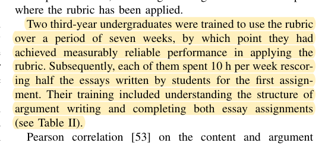
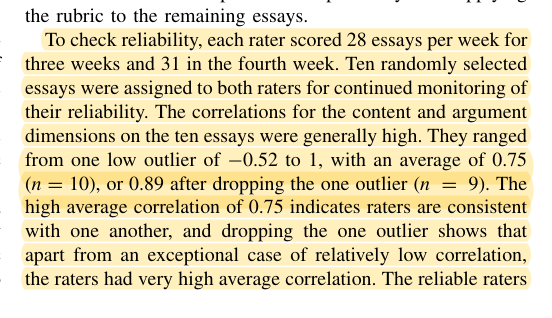
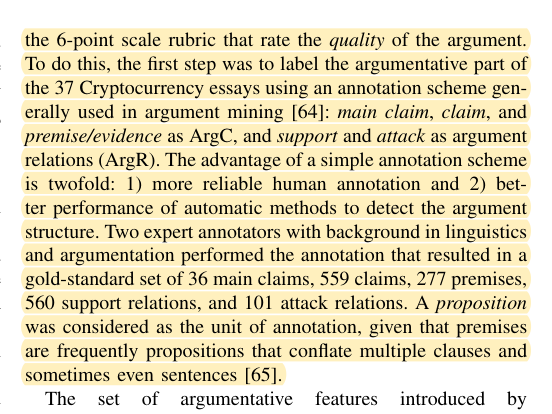
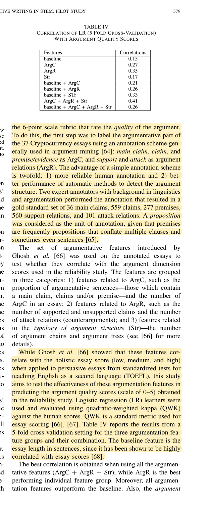

R29 · IEEE education study methods
Automated assessment needs a defensible human reference and informative component comparisons
Analytical Techniques for Developing Argumentative Writing in STEM: A Pilot Study
Patricia Marybelle Davies, Rebecca Jane Passonneau, Smaranda Muresan, Yanjun Gao · 2022
IEEE Transactions on Education 65(3):373–383; published version, 11 pages
What the study investigates
The paper combines writing instruction, human scoring reliability, and automated argument analysis to produce interpretable feedback.
How it was studied
The course involves approximately 200 students. Automated argument analysis uses 37 essays annotated by two language and argumentation experts. Length, argument components, support/attack relations, structure, and combinations are compared using five-fold cross-validation and quadratic weighted kappa (QWK). A separate reliability study trains two senior students for seven weeks and samples essays for shared scoring.
Findings
Table IV reports QWK .15 for the length baseline, .35 for relation features, and .41 for three types of argument features combined; adding length reduces it to .26. More input features do not necessarily improve assessment.
Limits of the evidence
Course enrollment is not the sample size of the 37-essay model evaluation. These feature comparisons do not validate EGJ. Correlation used in parts of the human-scoring analysis must not be treated as exact agreement. A brief calibration exercise cannot be described as equivalent to seven weeks of assessor training.
How it informs DualGraph-OSCE
Faculty references should be recorded before system outputs are unblinded. If a second assessor is available, an independently scored, prespecified subset helps assess reference reliability; a single-assessor study must be labeled accordingly and can add delayed reassessment. Nominal states use exact agreement and confusion tables. Continuous totals require a justified ICC model. The mechanism comparison retains evidence and rules while disabling the intervention-to-assessment linkage.
Where to cite it
Evaluation: human references, assessor calibration, and component comparisons. Discussion: limits of a single-expert reference.
Possible manuscript wording
A Transactions on Education study checks both human-score reliability and contributions of feature combinations. We therefore independently review faculty references and test the role-to-assessment dependency through a controlled replay ablation.
[R29·1]This is a manuscript-specific paraphrase, not a quotation from the source. The excerpts below define what the citation supports. The proposed method and its expected benefits are not findings of the cited paper.
Source passages and precise locations
Page numbers refer to physical pages in the saved original PDF, including any repository cover sheets. Compilation page numbers are listed separately. Yellow highlighting marks the passage used for the argument.
R29-E1Seven-week assessor training and independent scoring
Original PDF page 5. Highlight compilation page 420. The highlight identifies the passage used here; consult the full original page for its context.

R29-E2Shared scoring sample and reliability checks
Original PDF page 5. Highlight compilation page 420. The highlight identifies the passage used here; consult the full original page for its context.

R29-E3Thirty-seven essays and annotation by two experts
Original PDF page 7. Highlight compilation page 422. The highlight identifies the passage used here; consult the full original page for its context.

R29-E4Five-fold validation, QWK, and feature combinations
Original PDF page 7. Highlight compilation page 422. The highlight identifies the passage used here; consult the full original page for its context.
